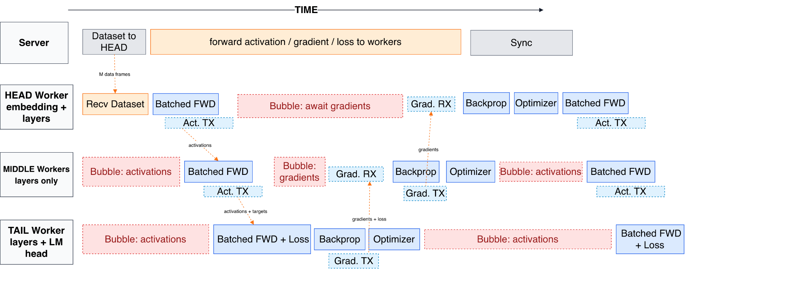

Training a language model across the phones, tablets, and laptops we already own.
centurion: an officer commanding 100 soldiers in the ancient Roman army
Efforts to make large AI models more accessible have mostly focused on inference: running pre-trained models locally instead of in the cloud. Training still happens almost exclusively in datacenters, because of its immense computational footprint. Centurion is a proof-of-concept that asks a different question: can model pre-training also happen locally, by spreading the work across the increasingly capable personal devices people already carry?
Datacenters are efficient because they pack as much compute as possible into a fixed space, but that density consumes enormous electricity and generates heat that must be carried away with forced air (noise) or evaporative cooling (water). Distributed training instead harnesses the idle compute already sitting in everyday electronics. Individually modest, in aggregate they are formidable, and they spread the environmental cost of computation thin.
With four heterogeneous workers (one iPhone, two iPads, and a Mac), we used Centurion to train GPT-2-Medium (355M parameters) over the internet at roughly 3,250 tokens per second: a model none of those devices could hold on its own, trained by all of them together.
Centurion draws on two lines of work. Volunteer-computing projects like Folding@home and SETI@home showed that idle personal machines can be pooled for massive parallel computations that don't require nodes to talk to each other. Distributed training is harder, because gradient descent requires frequently exchanging gradients and activations between nodes. Recent systems tackle this directly: Petals enables collaborative inference and fine-tuning across volunteer nodes; Hivemind is a library for decentralized training over the internet; DiLoCo and DisTrO cut communication for low-bandwidth settings; and SWARM Parallelism handles unreliable, heterogeneous workers.
Those systems target desktop PCs and servers with discrete GPUs. Centurion instead aims at mobile devices such as phones, tablets, and laptops, so we prioritized a working prototype on Apple platforms to reach as many devices as quickly as possible, then began extending the protocol to other platforms.
Centurion has three parts. An app runs on each device, where it handles connection, trains its assigned slice of the model, and shows live hardware diagnostics. A shared Swift library holds the GPT-2-style transformer, the tokenizers (character-level and GPT-2 BPE), and the split-forward and loss functions that let a device train only its layers. A Python server coordinates: it authenticates participants, tokenizes Wikitext-103, and relays activations and gradients between pipeline stages.
The central constraint is latency: communication between consumer devices over the internet is orders of magnitude slower than a datacenter interconnect. Centurion uses pipeline parallelism to hide it. The model is cut into consecutive layer ranges, and several micro-batches stay in flight at once, so each device keeps computing while data is in transit.

A run begins with profiling. Every device benchmarks its forward/backward speed and reports its available memory; the server then hands out layer ranges in proportion to measured capability. This matters because devices differ widely, and splitting the model evenly would throttle the whole pipeline to the slowest device's pace.
The head embeds token batches and sends activations downstream. Middle devices apply their layers and forward the result. The tail computes cross-entropy loss and sends gradients back up the chain. Each device runs its own AdamW optimizer on its own layers. An orchestrator starts and stops training, charts the loss, and reports per-worker timing, memory, and pipeline balance, while every device surfaces its thermal state, memory pressure, and CPU load, because sustained training pushes phones and tablets against their thermal limits.
With four heterogeneous workers, Centurion trained GPT-2-Medium (355M parameters) at roughly 3,250 tokens per second, reaching up to 68.8% pipeline efficiency. The headline isn't any single number. It's that a model too large for any one of these devices to hold was trained by all of them together.
Live worker assignment from a demo run · 24-layer model, 4 stages
The orchestrator gives the weak iPhone just 4 layers, already 80% of its capacity, and the stronger iPads more, so every stage takes roughly the same wall-clock time. That balance is what keeps the pipeline efficient.
Two results worth stating beyond the throughput numbers.
Per-step latency is dominated by transferring activations between devices, and activation size scales with model width, while depth is what gives you layers to shard. So for this setting, a narrow-and-deep model sends less over the slow network and exposes more units of parallelism than a wide one. The model's shape should be co-designed with the system.
Matching each device's share of the model to its measured speed and memory was the single largest contributor to pipeline efficiency. Without it, the whole pipeline drops to whatever the weakest device can sustain, the slowest-link bottleneck.
The app shows training live: per-step loss, forward / backward / send / receive timings, pipeline efficiency, and each device's thermal and memory state. The orchestrator lists every worker, its assigned layers, throughput, and round-trip latency in real time.
The prototype answers its core question: heterogeneous consumer devices, including phones, can collaboratively train a real LLM through one unified protocol. Three goals stand between that and a system that works outside a controlled setting.
The prototype demonstrates that on-device distributed training is feasible. The remaining work of fault tolerance, tighter scheduling, cross-platform support, and worker verification is what separates a demonstration from a system the open-source community can actually use.